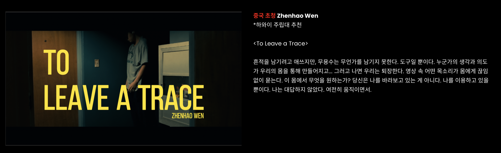

Bodies Left Out: Toward an Emotional Archive
Practice as ResearchA seven-week practice-as-research project investigating what happens when dancers excluded from institutional archives attempt to build their own. Over seven weeks of solo improvisation sessions in Honolulu, I worked as both dancer and director, filming improvisations and mixing them with fragments of daily life. Each week began with a different entry point: fatigue, uncertainty, peripheral vision, floor contact. A collaborator observed the footage weekly, and their reflections reshaped the following session. The project used multiple camera perspectives and frame extraction to disrupt the perfectionist gaze, producing a ghosting effect that shifted attention from technique to emotional texture. The final dance film, To Leave a Trace, emerged from this process. The resulting paper has been submitted to Dance Education in Practice and is currently under peer review.
Week One
9.26
Entering the Question
I've been noticing something about how we document dance. Most of the time, dance archives only keep the final, polished work. The emotional and personal moments from rehearsals and improvisation disappear. And I do not think that is only a loss of footage. I think those moments carry real knowledge, knowledge about what it means to move, to feel, to hesitate, to create.
Diana Taylor distinguishes between archive and repertoire. The archive holds what can be written, filmed, stored. The repertoire holds what lives in gesture, breath, spatial habit. Her point is not that one is better than the other. Her point is that the archive can never stand in for the repertoire, and repertoire is where most of dance actually lives. Robin Nelson extends this from a different angle: true knowledge comes from the process itself, from practicing, reflecting, and practicing again, which means the process is not a path toward knowledge, it is already knowledge. But this process is usually treated as un-archivable, so it is ignored. Rulan Tangen adds a third dimension. She reminds us that dancers' emotional and cultural memories are often treated as too personal to count as real knowledge. Her call to "re-story the body" is not about validation. It is about insisting that emotional experience is epistemic, not decorative.
So I want to try a different way of documenting dance. Taylor gives me a way to see why conventional video erases emotion. Nelson gives me a method structure, practice, reflection, adjusted practice, repeat. Tangen gives me permission to treat emotion as cultural memory rather than personal confession. Three anchors for a project that is otherwise going to be uncertain.
For weeks, I'll run a small documentary-style project. I'll be both the dancer and the director. Every day, I'll film my improvisations and mix them with small pieces of weekly life. One collaborator will help with filming as a production assistant. Another will be an outside observer, watching the footage each week and writing their reflections. Those reflections will shape how I film and how I move the next week. It will be a living loop: practice, reflect, reshape.
One thing I want to mark here, at the beginning. I am not a famous dancer. I do not train in a national company. I move in the small spaces that produce no photographs and no reviews. For the official archives of dance, I almost do not exist. But my body has been dancing for twenty years and it holds something. What it holds is not talent, not virtuosity. It is a different kind of knowing, accumulated through fatigue, through hesitation, through the small daily improvisations nobody records. Whether this kind of knowing counts as knowledge is the question this whole project is asking.
Twice in my reading this past year I came across the same idea in very different languages. Isadora Duncan said, "I dance because I am sad, because I lost my children." Two thousand years earlier, the Great Preface to the Chinese Book of Songs said: 情动于中而形于言，言之不足，故嗟叹之；嗟叹之不足，故永歌之；永歌之不足，不知手之舞之，足之蹈之也. When emotion rises inside and words are not enough, people sing; and when singing is still not enough, the hands begin to dance and the feet begin to move. Two traditions, two thousand years apart, making the same claim: the body picks up where language ends. This is the premise I am beginning from.
This is the claim I am beginning to test: that emotion itself is a form of dance knowledge, not an expressive decoration laid on top of it. Whether video can hold this knowledge, or whether it can only gesture toward it, I genuinely do not know yet. That not-knowing is where the practice starts.
Reference: Isadora Duncan
Week Two
10.3
Fatigue as Method
Uncertainty as Material
This week I realized that uncertainty is not simply a by-product of improvisation; it is the material itself. Improvisation never begins with an answer; it begins with curiosity. In Stephen Nachmanovitch's Free Play: Improvisation in Life and Art (1990), he describes creativity as "finding direction in the process," where meaning appears through doing rather than through pre-planning. I recognize that same logic in my own practice: I do not choreograph toward clarity; I move through ambiguity until it reveals a kind of sense. Improvisation, emotion, and the body share this instability. My project therefore studies not only what improvisation looks like, but how instability, bodily, emotional, environmental, can itself become a compositional tool. In practice-as-research terms, knowledge is not what I already know-that but what I learn-how through embodied inquiry (Nelson 2013). Each rehearsal becomes a small experiment in allowing the unknown to guide form.
Fatigue and Honesty
Much of this week I worked in a state of mental fatigue. When I'm tired, my movement slows; weight drops into my joints; effort replaces control. I used to treat fatigue as failure, but I am beginning to see it differently. Van Cutsem et al. (2017), in a systematic review of mental fatigue and physical performance, showed that mental fatigue lowers endurance and increases perceived effort even when physical capacity remains constant. The body has not actually lost power. It has lost the willingness to spend power. That gap between capacity and willingness is where I am doing my practice. What interests me is not the measurement of this gap but its translation into movement. Fatigue exposes an honest body, one that cannot disguise frustration or force vitality. The improvisation becomes heavier, sometimes awkward, but more truthful. Rather than hiding exhaustion behind trained performance habits, I let the body speak first. The result may not be "beautiful," but it is real.
From Performing to Being
During my undergraduate training I learned to smile through exhaustion, to "finish the show." That habit now feels performative in Judith Butler's sense of the word: identity maintained through repeated bodily acts that conform to expectation (Butler 1988). In this project I am trying to interrupt that repetition. When I stop performing "energy" and instead allow whatever state I'm in to structure the improvisation, the work shifts from performing to being. Robin Nelson (2013) calls this the epistemology of practice: knowledge generated through reflexive doing. Each take of my video log becomes both artifact and argument, a record of when presence overrides polish.
Toward an Inclusive Archive
My tired, imperfect body also raises a political question: Who gets archived? Dance history often privileges virtuosic technique, but ordinary dancers, those of us who move honestly rather than flawlessly, rarely enter institutional archives. Following Diana Taylor's concept of the repertoire (2003), I treat my practice as a living record where gestures, breath, and improvisational traces transmit knowledge alongside written text. I hope to build a small "living archive" where video, reflection, and embodied process coexist. This archive resists the hierarchy between mastery and sincerity; it insists that the everyday, unpolished body is also a site of cultural memory. Sometimes, to be seen, one must break small rules, like filming in a bathroom, or admitting fatigue on camera, but those rule-breaks are acts of reclamation.
Preliminary Conversation with Patrick
Reflection
References
Butler, Judith. 1988. "Performative Acts and Gender Constitution: An Essay in Phenomenology and Feminist Theory." Theatre Journal 40 (4): 519-531.
Nachmanovitch, Stephen. 1990. Free Play: Improvisation in Life and Art. New York: Penguin Putnam/Tarcher.
Nelson, Robin. 2013. Practice as Research in the Arts: Principles, Protocols, Pedagogies, Resistances. Basingstoke, UK: Palgrave Macmillan.
Taylor, Diana. 2003. The Archive and the Repertoire: Performing Cultural Memory in the Americas. Durham, NC: Duke University Press.
Van Cutsem, Joren, et al. 2017. "The Effects of Mental Fatigue on Physical Performance: A Systematic Review." Sports Medicine 47 (8): 1569-1588.
Week Three
10.10
Embodied Uncertainty: Improvising Without Training
This week's exploration arose from an unsettling yet generative question that Patrick posed to me: If I had never received any dance training, how would I dance? The question dismantles the habitual hierarchy between formal technique and the intuitive body, redirecting attention toward the untrained, affective, and self-organizing dimensions of movement. I could not actually answer the question. I cannot unload twenty years of training from my body. What I could do was let the question keep working inside the practice, as a pressure rather than a prompt. I began to wonder whether knowledge in dance could emerge not from mastery but from vulnerability, through hesitation, fatigue, and emotional fluctuation.
Each session followed a similar rhythm: I danced for two or three minutes, then stopped abruptly to write. The immediacy of writing was crucial; I feared that if I waited even a few minutes, the bodily memory would evaporate. I wrote about my sensations: the tremor in my hands, the heaviness in my arms, the slight delay in breathing, the feeling of time stretching within my chest. This procedure aligns with Robin Nelson's notion of praxis, the cyclical process of practice, reflection, and renewed practice through which artistic knowing becomes epistemological (Nelson 2013, 37-41). Writing was not a form of external documentation but a continuation of movement by other means, a linguistic extension of kinaesthetic experience. The page became another body, translating the unrecordable rhythm of fatigue into a reflective trace.
Through these iterations, fatigue emerged as the central phenomenon of the week. At first I regarded tiredness as an obstacle, a depletion of vitality. But as I observed more carefully, fatigue revealed its own internal rhythm, a slow, weighted tempo that forced my perception to expand. My limbs no longer resisted gravity; they negotiated with it. Erin Manning (2009, 14) argues that movement is never what a body does but rather what a body becomes through relation. Antonio Damasio's somatic marker hypothesis offers a parallel reading from neuroscience: emotions are not subjective add-ons to cognition but physiological signals that guide perception before thought (Damasio 1999). When I am fatigued, my interoceptive signals intensify; the body's internal states become louder than external instructions. In this amplification, fatigue did not diminish energy; it redistributed it. The slowing of time, the density of breath, and the tremor of hesitation all opened a space where emotion could think. Fatigue became a method, a rhythm through which the body articulated knowledge that could not be verbalized.
By the end of the week, five conceptual threads began to crystallize: entering the body without preconception; perceiving rhythm as emotional intelligence; observing the transformation of feeling into action; blending everyday gesture with performance; and sustaining a reflexive loop between dancing, observing, and writing. Together these ideas point toward an epistemology of the moving body, one that understands fatigue, hesitation, and uncertainty not as failures of technique but as openings for thought. As Susanne Langer (1953, 207) once wrote, art creates "virtual forms of feeling." In my case, improvisation becomes precisely that: a form in which emotion does not express itself but thinks itself.
Session Footage
References
Damasio, Antonio. 1999. The Feeling of What Happens: Body and Emotion in the Making of Consciousness. New York: Harcourt.
Langer, Susanne K. 1953. Feeling and Form: A Theory of Art. New York: Scribner.
Manning, Erin. 2009. Relationscapes: Movement, Art, Philosophy. Cambridge, MA: MIT Press.
Nelson, Robin. 2013. Practice as Research in the Arts. London: Palgrave Macmillan.
Week Four
10.17
Emotional Knowledge and the Reflective Archive
This week, I tried something different. Instead of improvising new dances, I turned the camera toward my past self, watching the recordings from earlier sessions. What I didn't expect was how uncomfortable that would feel. The moment I began to watch, my twenty years of training came back almost automatically. I started noticing the angles of my arms, the alignment of my torso, the phrasing of my steps. Without meaning to, I slipped into a critical mindset, evaluating, correcting, comparing. Even though my project is about emotion and process, not technique, I still looked at myself through the lens of training, as if my body needed to meet invisible standards. Amelia Jones reminds us that perception is never neutral; it is shaped by who we are and the histories we carry (Jones 1997, 12). In that sense, my gaze was already choreographed long before I pressed "play."
When I perform, I feel close to what I call an emotional rhythm, that inner pulse where breath, fatigue, and thought intertwine. But on screen, that pulse disappears. The camera captures the structure, not the sensation. It shows movement but not the emotional vibration that moves through it. Diana Taylor (2003) writes that archives preserve only residues, never the event itself. Watching my own footage, I finally understood what that meant. The recording was full of information but empty of intimacy. The emotional knowledge I felt while dancing had become distant, flattened, and strangely silent.
My handwritten notes also began to feel limited, even though they did record my feelings in that very moment. I wrote about my breathing, the rhythm of tiredness, the small tremors in my body, yet, when I read them back, they felt slightly detached from my original intention. They preserved the words, but not the warmth. And even more than that, I realized that none of these records, neither writing nor video, can allow a viewer to feel my emotions the way I did. The audience cannot immediately see where my emotion is located in the movement. As André Lepecki (2010) suggests, "the body is archive and archive a body." My body still knows what my recordings cannot show.
Still, this discomfort became productive. It made me imagine new ways of documenting that might hold emotional knowledge more faithfully. Sarah Pink (2013) talks about sensory ethnography as a method that attends to the "experiencing, knowing, and emplaced body." I began to wonder how I might build a more sensory archive, one that includes sound, temperature, or breath, not just movement. What if I recorded my voice right after dancing, describing the sensations I couldn't write? I did not know yet whether this would work.
By the end of this week, I started to see reflection itself as a kind of choreography, one that moves between memory, perception, and emotion. Watching myself was uncomfortable, yes, but also revealing. It showed me that embodied knowledge doesn't end when movement stops; it continues to shift as I return to it, reinterpret it, and attempt to translate it. In this loop between feeling and seeing, I found a new kind of learning: emotion as something that not only lives in the body, but also thinks through reflection.
Session Footage
References
Jones, Amelia. 1997. "Presence in Absentia: Experiencing Performance as Documentation." Art Journal 56 (4): 11-18.
Lepecki, André. 2010. "The Body as Archive: Will to Re-Enact and the Afterlives of Dances." Dance Research Journal 42 (2): 28-48.
Pink, Sarah. 2013. "Principles for Sensory Ethnography." In The Handbook of Visual Methods, 25-33. Los Angeles: Sage.
Taylor, Diana. 2003. The Archive and the Repertoire. Durham, NC: Duke University Press.
Week Five
10.24
Multiple Perspectives and Frame Extraction
Five weeks in, I realized the research was not converging. The material kept opening new questions faster than I could close them. So I made a decision: I am extending the project to seven weeks. Not because I underestimated the time, but because the phenomenon I am tracking resists the timeline I gave it. Emotional rhythm does not finish on schedule.
Last week's discomfort clarified something. It is not enough for me to document my own body; I also need to think about whether any of this is transferable. Can other dancers, non-dancers, or researchers build their own personal archives using a similar approach? I do not know. But this week I want to stop treating my practice as purely personal and start testing whether the method has any exportable structure.
My PaR collaborators, Santi and Kun, joined this week's experiment. My idea was to work with three cameras. The first was a fixed camera, positioned at a distance to capture my whole body and the overall structure of my improvisation. The second was a moving camera, operated by Santi, to follow the smaller details and emotional nuances that the first camera couldn't capture. The third was a first-person camera, a small action camera attached to my chest, to record the sensations and emotional expressions from my own perspective.
Camera 1: Fixed Wide Shot
Camera 2: Moving Observer
Camera 3: First-Person
In this week's practice, I concluded the current phase of my research and began experimenting with new modes of visual documentation. This was my first attempt to integrate frame extraction into my process. Interestingly, this method was not planned in advance, the initial camera settings were not properly adjusted, but the visual result turned out to be unexpectedly meaningful. When I reviewed the footage, the fragmented and layered images created a subtle ghosting effect. This effect seemed to soften the visual dominance of technical precision and physical aesthetics, shifting my attention back to the emotional texture of movement.
For a long time, I have struggled to watch myself dance without judgment. My eyes often fixate on what feels imperfect or "wrong" in my technique. Yet this altered visual rhythm, the repetition and blurring between frames, helped me perceive my body differently, less as an object to evaluate and more as an emotional vessel. The "imperfections" became traces of vulnerability rather than failures of control.
The fragmented, layered movement blurs the edges of technique; it interrupts the linear flow of execution that usually dominates my self-observation. When the image no longer reproduces every gesture with perfect continuity, the body ceases to be a site of technical accuracy and becomes a site of sensation. The gaps between frames create a rhythm that feels closer to memory than to motion; it captures how emotion lingers rather than how it performs. This aesthetic softening produces something I am tentatively calling "atmospheric presence." I am borrowing the term loosely from Gernot Böhme's work on atmospheres as perceptual environments (Böhme 1993), though I am using it in a narrower sense: not the ambient mood of a whole space, but the residual emotional charge that lingers between frames after the image has technically ended. Instead of highlighting control, balance, or line, the ghosted texture emphasizes afterimages, echoes of movement that invite the viewer (and myself) to feel rather than to analyze. The "blur" is not a mistake but a method: it suspends judgment and reclaims vulnerability as part of the dance's beauty.
References
Böhme, Gernot. 1993. "Atmosphere as the Fundamental Concept of a New Aesthetics." Thesis Eleven 36 (1): 113-126.
Week Six
10.31
Reserved
This week's entry is temporarily held back. The material developed here is being reworked into a forthcoming paper on archival exclusion and the unarchived dancer. Full text will be released when that paper is published.
Week Seven
11.7
Somatic Mirrors
The First Interview: Santi
Santi is a dancer and my collaborator. He was working with me on this project in two capacities. He was my cameraperson. He was also my outside observer. Each week he watched my improvisations from behind the camera and wrote down what he saw. His notes mattered to me because they described things I could not see from inside the movement.
But Santi himself was not sure. He said he was not certain whether what he observed from outside actually matched what was happening inside my body. He suspected he might be making claims about my practice that only held from one side of the camera. So he decided to improvise. The logic was simple: to check his observations, he would cross over from observer to practitioner and see whether the inside of improvisation felt the way he had been describing it from outside.
This is what my whole project has been asking, just through a different door. The archive stands outside and tries to describe the practice. The practice lives inside and often cannot be reached from outside. Santi's move was to test that gap by putting his own body into the place he had been observing.
Afterwards he told me what it felt like from inside. He said that while dancing, he could feel freedom in the space. He could move creatively, without evaluation, without commentary. He could trust himself. His body was open. His thinking was open. His heart was open. His soul was open.
I have been thinking about his words since. What struck me was that he did not describe what he saw. He described what became possible when he stopped being the one seeing. The outside position had been giving him something to record. The inside position gave him something to be.
This is the gap the project has been circling all along. The body that is seen and the body that dances are not the same body. Santi crossed between them. What he brought back is what I could not have given the reader on my own.
The Second Interview: Patrick
The second interview was with Patrick, a comedic performer. His background is different from mine in a way that turned out to be productive. Dancers are disciplined toward precision; comedians work inside an aesthetic where emotion is deliberately manipulated, expanded, compressed, timed to guide audience response. What interested me was how Patrick spoke about the honesty of improvisation.
He said that when emotion is crafted on stage, it still draws from "the same place" as everyday feeling, a reservoir of lived experience that is at once real and not real. The performer knows the emotion is constructed, yet grants themselves partial permission to experience it as true. That paradox, simultaneously genuine and fabricated, is itself a rhythm of feeling.
But here is what I wrote down immediately after the conversation: improvisational emotion is often more honest than rehearsed emotion. In unscripted moments, affect has less time to be shaped into recognizable forms; it emerges before the body decides how to polish it. This matches exactly what I encounter in my own improvisations, the tiny hesitations, abrupt intensifications, awkward recoveries that arise before technique intervenes.
Patrick used a metaphor I keep returning to. Most performing arts industries, he said, preserve only the "successful" moments, the clean take, the perfect rhythm, the emotional clarity that matches expectation. The rest functions "like fertilizer": discarded, unseen, yet feeding the growth of the visible work.
Fertilizer. I want to sit with that word. It says that what is not archived is not insignificant; it is the condition for what gets archived to grow. Without the discarded takes there is no clean take. Without the awkward hesitation there is no polished gesture.
Seven Weeks In
Seven weeks in. What have I actually learned?
I started by asking whether what my body holds counts as knowledge. I can now answer partially, yes, though not in the way I expected. The seven weeks did not give me a method that captures emotional rhythm. They gave me the opposite: a set of practices that make visible what cannot be captured.
Frame extraction shows emotion by blurring it, not by rendering it clearly. Fatigue becomes a method by refusing to be optimized. Watching myself fails and that failure is instructive. The interviews do not let me into Santi's or Patrick's experience; they return me to my own.
The claim I was beginning to test in Week One is that emotion itself is a form of dance knowledge. What I can now say is slightly different: emotional rhythm is not something my practice produces as output. It is the medium in which the practice occurs. Knowledge lives not in the record but in the re-encountering. Every time I watch the footage, read the notes, hear Patrick's word "fertilizer," the body that danced is not the same body that is now reading. Something continues to think.
What comes next is the final film, To Leave a Trace. The title is accurate. It does not preserve the emotion. It does not archive the body. It is a trace, and that is what a body can leave.
Final Dance Film
References
Patrick. 2025. Personal communication with the author, November 2025.
Screening
Seoul International Dance Festival in Tank · Relay dance film programme · 23 September 2026, Seoul
To Leave a Trace is scheduled in the relay dance film programme of the Seoul International Dance Festival in Tank on 23 September 2026. The organizer’s listing carries the film under my name, marks the entry 중국 초청, “invited from China,” and notes 하와이 주립대 추천, “a recommendation from the University of Hawaiʻi.” The listing does not name a campus, department or individual recommender.

View the organizer’s listing